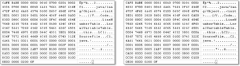

5.5 Objekte anlegen und zerstören
Wenn Objekte mit dem new-Operator angelegt werden, reserviert die Speicherverwaltung des Laufzeitsystems auf dem System-Heap Speicher. Wird das Objekt nicht mehr referenziert, so räumt der Garbage-Collector (GC) in bestimmten Abständen auf und gibt den Speicher an das Laufzeitsystem zurück.
5.5.1 Konstruktoren schreiben
Wenn der new-Operator ein Objekt anlegt, wird ein Konstruktor der Klasse automatisch aufgerufen. Mit einem eigenen Konstruktor lässt sich erreichen, dass ein Objekt nach seiner Erzeugung einen sinnvollen Anfangszustand aufweist. Dies kann bei Klassen, die Variablen beinhalten, notwendig sein, weil sie ohne vorherige Zuweisung beziehungsweise Initialisierung keinen Sinn ergäben.
Konstruktordeklarationen
Konstruktordeklarationen sehen ähnlich wie Methodendeklarationen aus – so gibt es auch Sichtbarkeiten und Überladung –, doch bestehen zwei deutliche Unterschiede:
- Konstruktoren tragen immer denselben Namen wie die Klasse.
- Konstruktordeklarationen besitzen keinen Rückgabetyp, also noch nicht einmal void.
Sollte eine Klasse Dungeon einen Konstruktor bekommen, schreiben wir:
class Dungeon
{
Dungeon() // Konstruktor der Klasse Dungeon
{
}
}
Ein Konstruktor, der keinen Parameter besitzt, nennt sich Standard-Konstruktor, parameterloser Konstruktor oder auch auf Englisch no-arg-constructor beziehungsweise nullary constructor.
Aufrufreihenfolge
Dass der Konstruktor während der Initialisierung und damit vor einem äußeren Methodenaufruf aufgerufen wird, soll ein kleines Beispiel zeigen:
Listing 5.29: Dungeon.java
public class Dungeon
{
public Dungeon()
{
System.out.println( "2. Konstruktor" );
}
public void play()
{
System.out.println( "4. Spielen" );
}
public static void main( String[] args )
{
System.out.println( "1. Vor dem Konstruktor" );
Dungeon d = new Dungeon();
System.out.println( "3. Nach dem Konstruktor" );
d.play();
}
}
Die Aufrufreihenfolge auf dem Bildschirm ist:
1. Vor dem Konstruktor
2. Konstruktor
3. Nach dem Konstruktor
4. Spielen
| Hinweis |
|
UML kennt zwar Attribute und Operationen, aber keine Konstruktoren im Java-Sinne.
|
Abbildung 5.15: Die Klasse Dungeon mit einem Konstruktor und zwei Methoden
5.5.2 Der vorgegebene Konstruktor (default constructor)
Wenn wir in unserer Klasse überhaupt keinen Konstruktor angeben, legt der Compiler automatisch einen an. Diesen Konstruktor nennt die Java Sprachdefinition (JLS) default constructor, was wir als vorgegebener Konstruktor (selten auch Vorgabekonstruktor) eindeutschen wollen.
Schreiben wir nur
class Player
{
}
dann macht der Compiler daraus immer automatisch:
class Player
{
Player() { }
}
Der vorgegebene Konstruktor hat immer die gleiche Sichtbarkeit wie die Klasse. Ist also die Klasse public/private/protected, wird auch der automatisch eingeführte Konstruktor public/private/protected sein. Ist die Klasse paketsichtbar, ist es auch der Konstruktor.
Vorgegebener und expliziter Standard-Konstruktor
Ob ein parameterloser Konstruktor vom Compiler oder Entwickler angelegt wurde, ist ein Implementierungsdetail, das für Nutzer der Klasse irrelevant ist. Daher ist es im Grunde egal, ob wir einen Standard-Konstruktor selbst anlegen oder ob wir uns einen vorgegebenen Konstruktor vom Compiler generieren lassen: Im Bytecode lässt sich das nicht mehr unterscheiden. Selbst eine generierte JavaDoc-API-Dokumentation von einer public class C1 {} und public class C2 { public C2(){} } wäre strukturell gleich.
Abbildung 5.16: Es gibt keinen Unterschied im Bytecode bezüglich der Konstruktoren in den Klassen C1 und C2
In der Begriffswelt der Insel heißt ein parameterloser Konstruktor immer Standard-Konstruktor, was natürlich den Unterschied verschwimmen lässt, ob der Standard-Konstruktor von Hand angelegt wurde oder als (impliziter) vorgegebener Konstruktor vom Compiler eingeführt wurde. Um das noch klarer zu unterscheiden, können wir diesen Umstand mit vorgegebener (Standard-)Konstruktor und expliziter Standard-Konstruktor weiter präzisieren.
Auch wenn der Compiler einen vorgegebenen Konstruktor anlegt, ist es oft sinnvoll, einen eigenen Standard-Konstruktor anzugeben, auch wenn der Rumpf leer ist. Ein Grund ist, ihn mit JavaDoc zu dokumentieren, ein anderer Grund ist, die Sichtbarkeit explizit zu wählen, etwa wenn die Klasse public ist, aber der Konstruktor nur die Paketsichtbarkeit haben soll.
| Begrifflichkeit II |
|
Einige Autoren nennen nur den vom Entwickler explizit geschriebenen parameterlosen Konstruktor »Standard-Konstruktor« und trennen dies sprachlich von dem Konstruktor, den der Compiler generiert hat, den sie weiterhin »Default-Konstruktor« nennen. Beide werden dann zusammengefasst einfach »parameterlose Konstruktoren« genannt. Wenn also etwa die Frage gestellt wird, ob die Deklaration class C { } einen Standard-Konstruktor enthält, ist die Begrifflichkeit des Autors zu prüfen. Wenn der Autor nur den ausprogrammierten parameterlosen Konstruktor »Standard-Konstruktor« genannt hat, so hätte die Klasse C nach seiner Definition keinen »Standard-Konstruktor«. Nach der Insel-Definition hätte die Klasse zwar einen vorgegebenen (Standard-)Konstruktor, aber keinen expliziten Standard-Konstruktor. |
5.5.3 Parametrisierte und überladene Konstruktoren
Der Standard-Konstruktor hatte keine Parameter, und daher hatten wir ihn auch parameterlosen Konstruktor genannt. Ein Konstruktor kann aber wie eine Methode auch eine Parameterliste besitzen: Er heißt dann parametrisierter Konstruktor oder allgemeiner Konstruktor. Konstruktoren können wie Methoden überladen, also mit unterschiedlichen Parameterlisten deklariert sein. Dies soll auch für den Spieler gelten:
- Player( String name )
- Player( String name, String item )
Der Player soll sich mit einem Namen und alternativ auch mit einem Gegenstand initialisieren lassen:
Listing 5.30: com/tutego/insel/game/v6/Player.java, Player
public class Player
{
public String name;
public String item;
public Player( String name )
{
this.name = name;
}
public Player( String name, String item )
{
this.name = name;
this.item = item;
}
}
Abbildung 5.17: UML-Diagramm für Player mit zwei Konstruktoren
Die Nutzung kann so aussehen:
Listing 5.31: com/tutego/insel/game/v6/Playground.java, main()
Player spuderman = new Player( "Spuderman" );
System.out.println( spuderman.name ); // Spuderman
System.out.println( spuderman.item ); // null
Player holk = new Player( "Holk", "green color" );
System.out.println( holk.name ); // Holk
System.out.println( holk.item ); // green color
Wann der Compiler keinen vorgegebenen Konstruktor einfügt
Wenn es mindestens einen ausprogrammierten Konstruktor gibt, gibt der Compiler keinen eigenen Standard-Konstruktor mehr vor. Wenn wir also nur parametrisierte Konstruktoren haben – wie in unserem obigen Beispiel – führt der Versuch, bei unserer Spieler-Klasse ein Objekt einfach mit dem Standard-Konstruktor über new Player() zu erzeugen, zu einem Übersetzungsfehler, da es eben keinen vom Compiler generierten Standard-Konstruktor gibt:
Player p = new Player(); //The constructor Player() is undefined
Dass der Compiler keinen vorgegebenen Konstruktor anlegt, hat seinen guten Grund: Es ließe sich sonst ein Objekt anlegen, ohne dass vielleicht wichtige Variablen initialisiert worden wären. So ist das bei unserem Spieler. Die parametrisierten Konstruktoren erzwingen, dass beim Erzeugen ein Spielername angegeben werden muss, sodass nach dem Aufbau auf jeden Fall ein Spielername vorhanden ist. Wenn wir es ermöglichen wollen, dass Entwickler neben den parametrisierten Konstruktoren auch einen parameterlosen Standard-Konstruktor nutzen können, müssten wir diesen per Hand hinzufügen.
Wie ein nützlicher Konstruktor aussehen kann
Besitzt ein Objekt eine Reihe von Attributen, so wird ein Konstruktor in der Regel diese Attribute initialisieren wollen. Wenn wir eine Unmenge von Attributen in einer Klasse haben, sollten wir dann auch endlos viele Konstruktoren schreiben? Besitzt eine Klasse Attribute, die durch setXXX()-Methoden gesetzt und durch getXXX()-Methoden gelesen werden, so ist es nicht unbedingt nötig, dass diese Attribute im Konstruktor gesetzt werden. Ein Standard-Konstruktor, der das Objekt in einen Initialzustand setzt, ist angebracht; anschließend können die Zustände mit den Zugriffsmethoden verändert werden. Das sagt auch die JavaBean-Konvention. Praktisch sind sicherlich auch Konstruktoren, die die häufigsten Initialisierungsszenarien abdecken. Das Punkt-Objekt der Klasse java.awt.Point lässt sich mit dem Standard-Konstruktor erzeugen, aber auch mit einem parametrisierten, der gleich die Koordinatenwerte entgegennimmt.
Wenn ein Objekt Attribute besitzt, die nicht über setXXX()-Methoden modifiziert werden können, diese Werte aber bei der Objekterzeugung wichtig sind, so bleibt uns nichts anderes übrig, als die Werte im Konstruktor einzufügen (eine setXXX()-Methode, die nur einmalig eine Schreiboperation zulässt, ist nicht wirklich schön). So arbeiten zum Beispiel Werteobjekte, die einmal im Konstruktor einen Wert bekommen und ihn beibehalten. In der Java-Bibliothek gibt es eine Reihe solcher Klassen, die keinen Standard-Konstruktor besitzen, und nur einige parametrisierte, die Werte erwarten. Die im Konstruktor übergebenen Werte initialisieren das Objekt, und es behält diese Werte sein ganzes Leben lang. Zu den Klassen gehören zum Beispiel Integer, Double, Color, File oder Font.
5.5.4 Copy-Konstruktor
Ein Konstruktor ist außerordentlich praktisch, wenn er ein typgleiches Objekt über seinen Parameter entgegennimmt und aus diesem Objekt die Startwerte für seinen eigenen Zustand nimmt. Ein solcher Konstruktor heißt Copy-Konstruktor.
Dazu ein Beispiel: Die Klasse Player bekommt einen Konstruktor, der einen anderen Spieler als Parameter entgegennimmt. Auf diese Weise lässt sich ein schon initialisierter Spieler als Vorlage für die Attributwerte nutzen. Alle Eigenschaften des existierenden Spielers können so auf den neuen Spieler übertragen werden. Die Implementierung kann so aussehen:
Listing 5.32: com/tutego/insel/game/v7/Player.java, Player
public class Player
{
public String name;
public String item;
public Player()
{
}
public Player( Player player )
{
name = player.name;
item = player.item;
}
}
Abbildung 5.18: Klassendiagramm für Player mit Standard- und parametrisierten Konstruktoren
Die statische main()-Methode soll jetzt einen neuen Spieler patric erzeugen und anschließend wiederum einen neuen Spieler tryk mit den Werten von patric initialisieren:
Listing 5.33: com/tutego/insel/game/v7/Playground.java, main()
Player patric = new Player();
patric.name = "Patric Circle";
patric.item = "Knoten";
Player tryk = new Player( patric );
System.out.println( tryk.name ); // Patric Circle
System.out.println( tryk.item ); // Knoten
| Hinweis |
|
Wenn die Klasse Player neben dem parametrisierten Konstruktor Player(Player) |
5.5.5 Einen anderen Konstruktor der gleichen Klasse mit this() aufrufen
Mitunter werden zwar verschiedene Konstruktoren angeboten, aber nur in einem Konstruktor verbirgt sich die tatsächliche Initialisierung des Objekts. Nehmen wir unser Beispiel mit dem Konstruktor, der einen Spieler als Vorlage über einen Parameter entgegennimmt, aber auch einen anderen Konstruktor, der den Namen und den Gegenstand direkt entgegennimmt:
Listing 5.34: com/tutego/insel/game/v8/Player.java, main()
public class Player
{
public String name;
public String item;
public Player( Player player )
{
name = player.name;
item = player.item;
}
public Player( String name, String item )
{
this.name = name;
this.item = item;
}
}
Zu erkennen ist, dass beide Konstruktoren die Objektvariablen initialisieren und letztlich das Gleiche machen. Schlauer ist es, wenn der Konstruktor Player(Player) den Konstruktor Player(String, String) der eigenen Klasse aufruft. Dann muss nicht gleicher Programmcode für die Initialisierung mehrfach ausprogrammiert werden. Java lässt eine solche Konstruktorverkettung mit dem Schlüsselwort this zu:
Listing 5.35: com/tutego/insel/game/v9/Player.java, Player
public class Player
{
public String name;
public String item;
public Player()
{
this( "", "" );
}
public Player( Player player )
{
this( player.name, player.item );
}
public Player( String name, String item )
{
this.name = name;
this.item = item;
}
}
Abbildung 5.19: Das Sequenzdiagramm mit dem Aufruf von zwei Konstruktoren
Der Gewinn gegenüber der vorherigen Lösung ist, dass es nur eine zentrale Stelle gibt, die im Fall von Änderungen angefasst werden müsste. Nehmen wir an, wir hätten zehn Konstruktoren für alle erdenklichen Fälle in genau diesem Stil implementiert. Tritt der unerwünschte Fall ein, dass wir auf einmal in jedem Konstruktor etwas initialisieren müssen, so muss der Programmcode – etwa ein Aufruf der Methode init() – in jeden der Konstruktoren eingefügt werden. Dieses Problem umgehen wir einfach, indem wir die Arbeit auf einen speziellen Konstruktor verschieben. Ändert sich nun das Programm in der Weise, dass beim Initialisieren überall zusätzlicher Programmcode ausgeführt werden muss, dann ändern wir eine Zeile in dem konkreten, von allen benutzten Konstruktor. Damit fällt für uns wenig Änderungsarbeit an – unter softwaretechnischen Gesichtspunkten ein großer Vorteil. Überall in den Java-Bibliotheken lässt sich diese Technik wiedererkennen.
| Hinweis |
|
Das Schlüsselwort this ist in Java mit zwei Funktionen belegt: Zum einen »zeigt« es als Referenz auf das aktuelle Objekt, und zum anderen formt es einen Aufruf zu einem anderen Konstruktor der gleichen Klasse. |
Einschränkungen von this() *
Beim Aufruf eines anderen Konstruktors mittels this() gibt es zwei wichtige Beschränkungen:
- Der Aufruf von this() muss die erste Anweisung des Konstruktors sein.
- Vor dem Aufruf von this()im Konstruktor können keine Objekteigenschaften angesprochen werden. Das heißt, es darf weder eine Objektvariable als Argument an this() übergeben werden noch darf eine andere Objektmethode der Klasse aufgerufen werden, die etwa das Argument berechnen möchte. Erlaubt ist nur der Zugriff auf statische Variablen (etwa finale Variablen, die Konstanten sind) oder der Aufruf von statischen Methoden.
Die erste Einschränkung besagt, dass das Erzeugen eines Objekts immer das Erste ist, was ein Konstruktor leisten muss. Nichts darf vor der Initialisierung ausgeführt werden. Die zweite Einschränkung hat damit zu tun, dass die Objektvariablen erst nach dem Aufruf von this() initialisiert werden, sodass ein Zugriff unsinnig wäre – die Werte wären im Allgemeinen null:
Listing 5.36: Stereo.java
public class Stereo
{
static final int STANDARD = 1000;
/*non-static*/ final int standard = 1000;
public int watt;
public Stereo()
{
// this( standard ); // Führt auskommentiert zum Compilerfehler:
// ^ Cannot refer to an instance field standard while
// explicitly invoking a constructor
this( STANDARD );
}
public Stereo( int watt )
{
this.watt = watt;
}
}
Da Objektvariablen bis zu einem bestimmten Punkt noch nicht initialisiert sind (was der nächste Abschnitt erklärt), lässt uns der Compiler nicht darauf zugreifen – nur statische Variablen sind als Übergabeparameter erlaubt. Daher ist der Aufruf this(standard) nicht gültig, da standard eine Objektvariable ist; this(STANDARD) ist jedoch in Ordnung, weil STANDARD eine statische Variable ist.
5.5.6 Ihr fehlt uns nicht – der Garbage-Collector
Glücklicherweise werden wir beim Programmieren von der lästigen Aufgabe befreit, Speicher von Objekten freizugeben. Wird ein Objekt nicht mehr referenziert, findet der Garbage-Collector[135](Eine lange Tradition hat der Garbage-Collector unter LISP und unter Smalltalk, aber auch Visual Basic benutzt einen GC, und selbst das C64-BASIC nutzte Garbage-Collection für nicht mehr benötigte Zeichenketten.) dieses Objekt und kümmert sich um alles Weitere – der Entwicklungsprozess wird dadurch natürlich vereinfacht. Der Einsatz eines GC verhindert zwei große Probleme:
- Ein Objekt kann gelöscht werden, aber die Referenz existiert noch (engl. dangling pointer).
- Kein Zeiger verweist auf ein bestimmtes Objekt, dieses existiert aber noch im Speicher (engl. memory leak).
Prinzipielle Arbeitsweise des Müllaufsammlers
Der Garbage-Collector (GC) erscheint hier als ominöses Ding, das die Objekte clever verwaltet. Doch was ist der GC? Implementiert wird er als unabhängiger Thread mit niedriger Priorität. Er verwaltet die Wurzelobjekte, von denen aus das gesamte Geflecht der lebendigen Objekte (der sogenannte Objektgraph) erreicht werden kann. Dazu gehören die Wurzel des Thread-Gruppen-Baums und die lokalen Variablen aller aktiven Methodenaufrufe (Stack aller Threads). In regelmäßigen Abständen markiert der GC nicht benötigte Objekte und entfernt sie.
Dank der HotSpot-Technologie geschieht das Anlegen von Objekten unter der Java VM von Oracle sehr schnell. HotSpot verwendet einen generationenorientierten GC, der den Umstand ausnutzt, dass zwei Gruppen von Objekten mit deutlich unterschiedlicher Lebensdauer existieren. Die meisten Objekte sterben sehr jung, die wenigen überlebenden Objekte werden hingegen sehr alt. Die Strategie dabei ist, dass Objekte im »Kindergarten« erzeugt werden, der sehr oft nach toten Objekten durchsucht wird und in der Größe beschränkt ist. Überlebende Objekte kommen nach einiger Zeit aus dem Kindergarten in eine andere Generation, die nur selten vom GC durchsucht wird. Damit folgt der GC der Philosophie von Auffenberg, der meinte: »Verbesserungen müssen zeitig glücken; im Sturm kann man nicht mehr die Segel flicken.« Das heißt, der GC arbeitet ununterbrochen und räumt auf. Er beginnt nicht erst mit der Arbeit, wenn es zu spät und der Speicher schon voll ist.
Die manuelle Nullung und Speicherlecks
Im folgenden Szenario wird der GC das nicht mehr benötigte Objekt hinter der Referenzvariablen ref entfernen, wenn die Laufzeitumgebung den inneren Block verlässt:
{
{
StringBuffer ref = new StringBuffer();
}
// StringBuffer ref ist frei für den GC
}
In fremden Programmen sind mitunter Anweisungen wie die folgende zu lesen:
ref = null;
Oftmals sind sie unnötig, denn wie im Fall unseres Blocks weiß der GC, wann der letzte Verweis vom Objekt genommen wurde. Anders sieht das aus, wenn die Lebensdauer der Variablen größer ist, etwa bei einer Objekt- oder sogar bei einer statischen Variablen, oder wenn sie in einem Feld referenziert wird. Wenn dann das referenzierte Objekt nicht mehr benötigt wird, sollte die Variable (oder der Feldeintrag) mit null belegt werden, da andernfalls der GC das Objekt aufgrund der starken Referenzierung nicht wegräumen würde. Zwar findet der GC jedes nicht mehr referenzierte Objekt, aber die Fähigkeit zur Divination[136](Wahrsagen), Speicherlecks durch unbenutzte, aber referenzierte Objekte aufzuspüren, hat er nicht.
5.5.7 Private Konstruktoren, Utility-Klassen, Singleton, Fabriken
Ein Konstruktor kann privat sein, was verhindert, dass von außen ein Exemplar dieser Klasse gebildet werden kann. Was auf den ersten Blick ziemlich beschränkt erscheint, erweist sich als ziemlich clever, wenn damit die Exemplarbildung bewusst verhindert werden soll. Sinnvoll ist das etwa bei den sogenannten Utility-Klassen. Das sind Klassen, die nur statische Methoden besitzen, also Hilfsklassen sind. Beispiele für diese Hilfsklassen gibt es zur Genüge, zum Beispiel Math. Warum sollte es hier Exemplare geben? Für den Aufruf von max() ist das nicht nötig. Also wird die Bildung von Objekten erfolgreich mit einem privaten Konstruktor unterbunden.
Wenn ein Konstruktor privat ist, bedeutet das noch lange nicht, dass keine Exemplare mehr erzeugt werden können. Ein privater Konstruktor besagt nur, dass er von außen nicht sichtbar ist – aber die Klasse selbst kann ihn ebenso wie private Methoden »sehen« und zur Objekterzeugung nutzen. Objektmethoden kommen dafür nicht in Frage, da ähnlich wie beim Henne-Ei-Problem ja vorher ein Objekt nötig wäre. Es bleiben somit die statischen Methoden als Erzeuger.
Singleton
Ein Singleton stellt sicher, dass es von einer Klasse nur ein Exemplar gibt.[137](Nicht in der gesamten JVM, das ist nicht möglich. Zu diesem Problem kommen wir noch in Abschnitt 11.5, »Klassenlader (Class Loader)«.) Nützlich ist das für Dinge, die es nur genau einmal in einer Applikation geben soll, etwa einen Logger für Protokollierungen:
Listing 5.37: Logger.java
public final class Logger
{
private static Logger logger;
private Logger()
{
}
public static synchronized Logger getInstance()
{
if ( logger == null )
logger = new Logger();
return logger;
}
public void log( String s )
{
System.out.println( s );
}
}
Interessant sind einmal der private Konstruktor und zum anderen die statische Anfrage-Methode getInstance(). Gibt es noch kein Exemplar des Loggers, erzeugt getInstance() eines und weist es der Klassenvariablen zu. synchronized schützt bei parallelen Zugriffen, sodass nur ein Thread die Methode betreten kann und ein potenziell anderer Thread so lange warten muss, bis der erste Thread die Methode wieder verlassen hat:
Listing 5.38: LoggerUser.java
public class LoggerUser
{
public static void main( String[] args )
{
Logger.getInstance().log( "Log mich!" );
}
}
Fabrikmethoden
Eine Fabrikmethode geht noch einen Schritt weiter als ein Singleton. Sie erzeugt nicht exakt ein Exemplar, sondern unter Umständen auch mehrere. Die grundlegende Idee jedoch ist, dass der Anwender nicht über einen Konstruktor ein Exemplar erzeugt, sondern im Allgemeinen über eine statische Methode. Dies hat den Vorteil, dass die statische Fabrikmethode
- alte Objekte aus einem Cache wiedergeben kann,
- den Erzeugungsprozess auf Unterklassen verschieben kann und
- null zurückgeben darf.
Ein Konstruktor erzeugt immer ein Exemplar der eigenen Klasse. Eine Rückgabe wie null kann ein Konstruktor nicht liefern, denn bei new wird immer ein neues Objekt gebaut. Fehler könnten nur über eine Exception angezeigt werden.
In der Java-Bibliothek gibt es eine Unmenge an Beispielen für Fabrikmethoden. Durch eine Namenskonvention sind sie leicht zu erkennen: Meistens heißen sie getInstance(). Eine Suche in der API-Dokumentation fördert gleich 90 solcher Methoden zutage. Viele sind parametrisiert, um genau anzugeben, was die Fabrik für Objekte erzeugen soll. Nehmen wir zum Beispiel die statischen Fabrikmethoden vom java.util.Calendar:
- Calendar.getInstance()
- Calendar.getInstance( java.util.Locale )
- Calendar.getInstance( java.util.TimeZone )
Die nicht parametrisierte Methode gibt ein Standard-Calendar-Objekt zurück. Calendar ist aber selbst eine abstrakte Basisklasse. Innerhalb der getInstance()-Methode befindet sich Quellcode wie der folgende:
static Calendar getInstance()
{
return new GregorianCalendar();
}
Im Rumpf der Erzeugermethode getInstance() wird bewusst die Unterklasse GregorianCalendar ausgewählt, die Calendar erweitert. Das ist möglich, da durch Vererbung eine Ist-eine-Art-von-Beziehung gilt und GregorianCalendar ein Calendar ist. Der Aufrufer von getInstance() bekommt das nicht mit, und er empfängt wie gewünscht ein Calendar-Objekt. Mit dieser Möglichkeit kann getInstance() testen, in welchem Land die JVM läuft, und abhängig davon die passende Calendar-Implementierung auswählen.
Ihr Kommentar
Wie hat Ihnen das <openbook> gefallen? Wir freuen uns immer über Ihre freundlichen und kritischen Rückmeldungen.
 Jetzt bestellen
Jetzt bestellen


{kind=link}
{kind=link}
{kind=link}
{kind=link}
{kind=link}